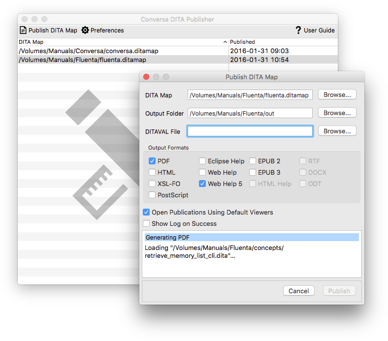

Conversa provides a graphical user interface to the free
DITA Converter
(ditac) from XMLmind that you can use to easily publish your DITA projects
in multiple formats.
Conversa works right out of the box. Just install it and generate PDF, HTML
or Web Help from your DITA files using the default configuration.
The output formats supported by Conversa are:
| PDF |
HTML |
EPUB 2 & 3 |
PostScript |
| Eclipse Help |
Web Help |
Web Help with HTML 5 |
XSL-FO |
| HTML Help |
RTF |
DOCX |
ODT |

Microsoft HTML Help Workshop is required to generate HTML Help in
.chm format for Windows.
It can be freely downloaded from
Microsoft's Download Center.
XMLmind XSL-FO Converter is used to generate DOCX, RTF and ODT output from DITA files.
XSL-FO Converter is a commercial product from
XMLMind.